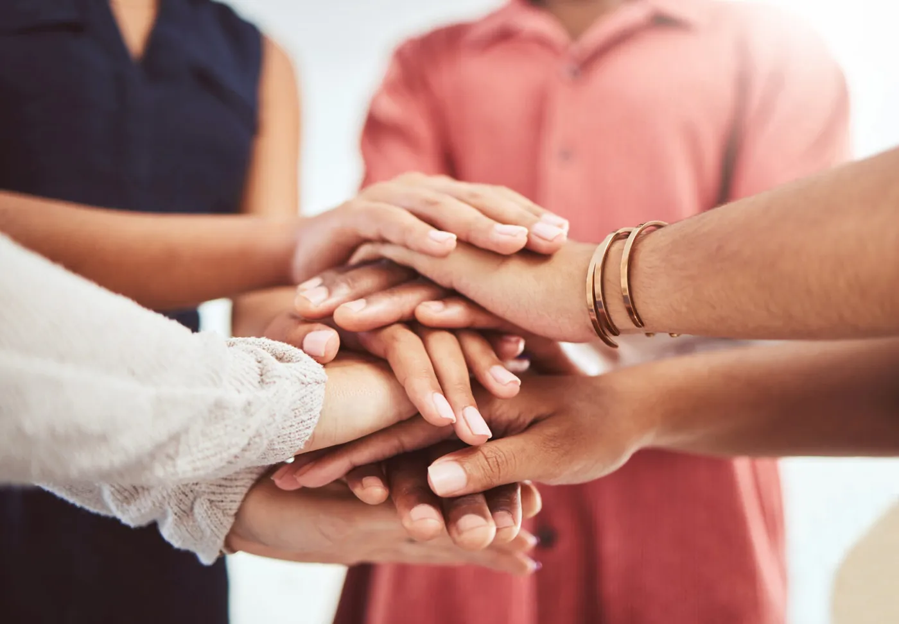
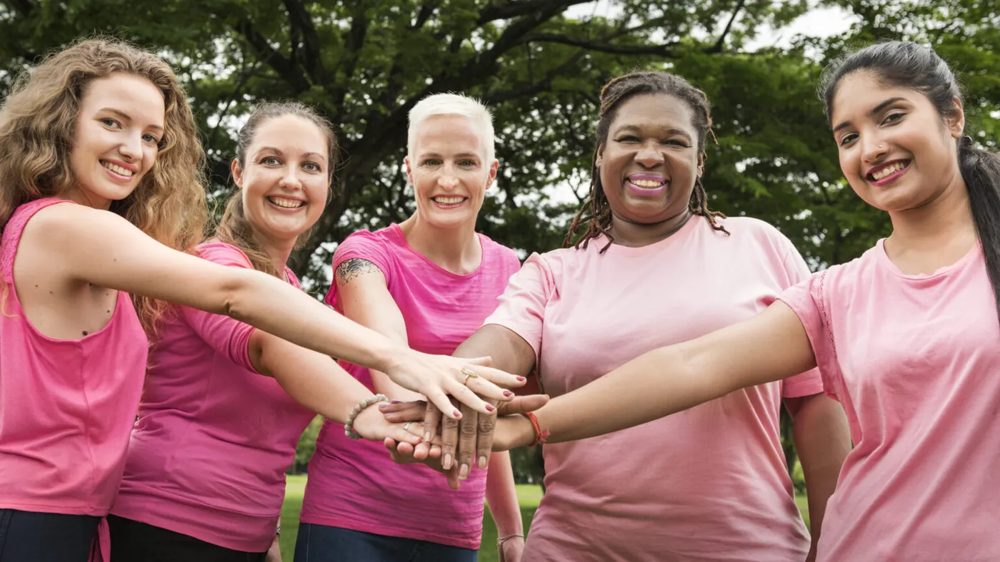
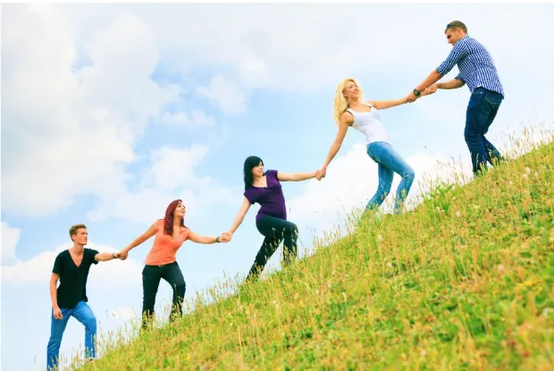
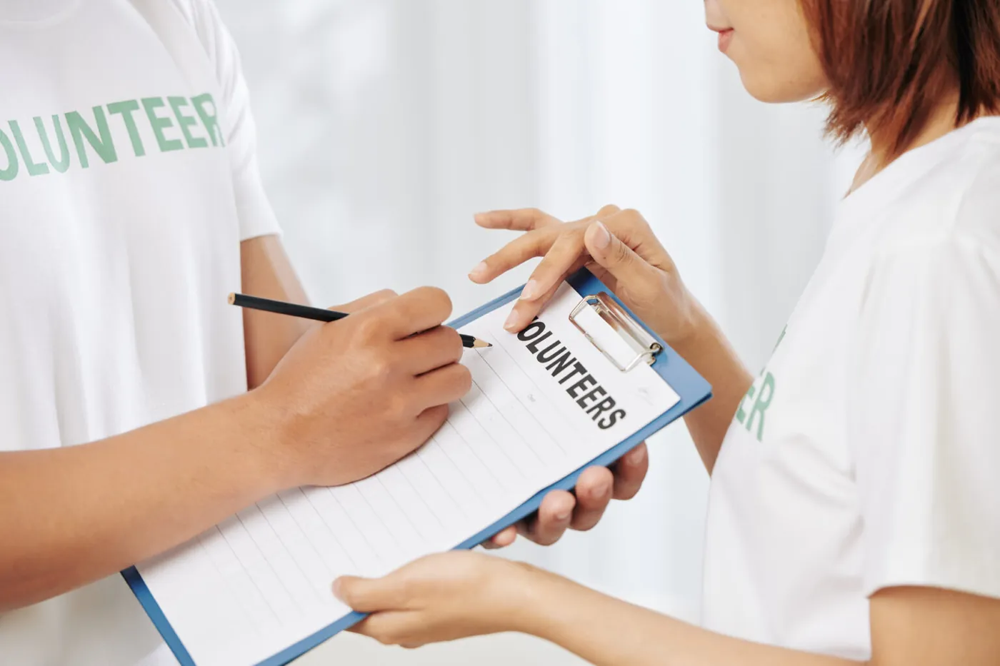

Impulsando fundaciones, iluminando destinos
Somos una organización sin fines de lucro que se enfoca en fortalecer a las fundaciones que trabajan bajo 6 objetivos sociales: salud y bienestar, equidad de género, desarrollo laboral, educación, reducción de desigualdades y alianzas para lograr objetivos.

Con orgullo trabajamos junto a nuestras alianzas


6 causas, 1 meta: hacer del mundo un lugar mejor

Nuestro propósito es conectar, apoyar y generar un impacto positivo en las fundaciones pequeñas que lo necesitan.
Inspirar al mundo con el poder del compromiso colectivo para fomentar un cambio positivo en nuestra comunidad. Buscamos crear conciencia sobre las fortalezas que surgen al unirnos para apoyar la construcción de un mundo mejor. Nos comprometemos a ser un pilar fundamental para las fundaciones, fortaleciéndolas y potenciando sus resultados.
Conecta, aprende y crece junto a otras fundaciones
 Foro
ForoForo Internacional de Sustentabilidad para ONG
Un evento virtual y gratuito diseñado para capacitar, conectar y fortalecer a las fundaciones que buscan maximizar su impacto. Aprende de expertos en storytelling, planeación estratégica, innovación y alianzas.

ComunidadÚnete a nuestro grupo privado de fundaciones
Una comunidad dedicada a compartir conocimientos, recursos y oportunidades en el mundo de las fundaciones. Conecta con profesionales del sector y accede a contenido exclusivo.
 Podcast
PodcastVoces que Inspiran
Nuestro podcast presenta a personas y organizaciones que generan un impacto positivo en sus comunidades. ¿Conoces a alguien que hace el bien? Invita a esa persona a compartir su historia.
¿Cómo ayudamos a generar un cambio positivo?
Nuestro objetivo principal es fortalecer a las fundaciones para impulsar un cambio positivo en las comunidades. Lo logramos a través de proyectos basados en nuestros pilares fundamentales.
Ayúdanos a ayudar
Nuestra misión es servir de conexión entre benefactores y fundaciones, contribuyendo de manera positiva a sus propósitos.
Dona ahora
Generar conciencia

Crear conexiones

Capacitación continua

¿Conoces una fundación?
Si conoces una fundación que comparte nuestra pasión por el cambio y la colaboración… ¡contáctanos! Juntos podemos lograr un impacto aún mayor.

Únete a nuestro equipo de voluntarios
¿Te apasiona marcar la diferencia y contribuir a un cambio positivo? ¡Te invitamos a formar parte de nuestro dedicado equipo de voluntarios! Colabora en proyectos significativos, comparte tus habilidades y sé una fuerza impulsora de las iniciativas que están transformando vidas.
Hay muchas formas de ayudar

Ayúdanos a conocer tu fundación
Mientras mejor te conozcamos, mejores conexiones podremos crear para ampliar tu alcance y contribuir a fortalecer tu fundación.

¿Conoces a alguien que marca la diferencia?
Nomina a esa persona para que aparezca en nuestro podcast y comparta su mensaje con el mundo. Juntos podemos inspirar a otros a pasar a la acción.
Visita nuestro blog
Temas interesantes que te harán reflexionar. Si quieres ser parte del blog, escríbenos a contact@gratitudegivingfoundation.org.
Súmate a esta maravillosa causa
Nuestro objetivo es beneficiar a las personas trabajando junto a las fundaciones y así aumentar el impacto de sus resultados. Hay muchas maneras de lograrlo. Ayúdanos a ayudar; contáctanos para más información.